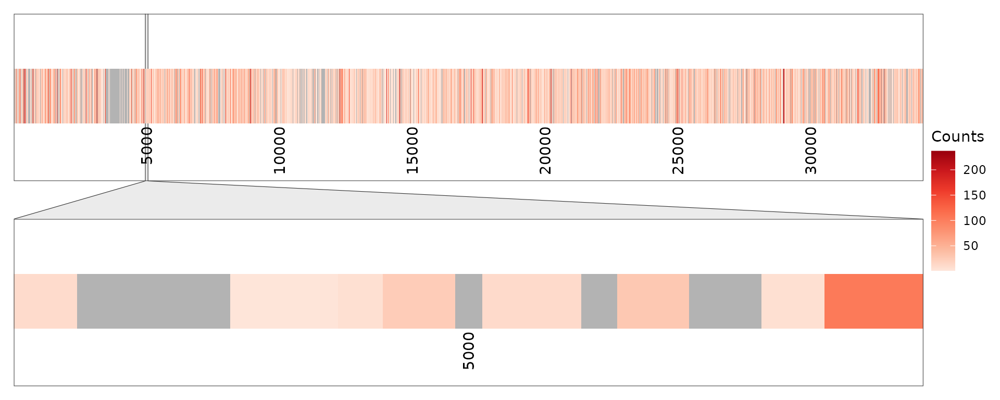
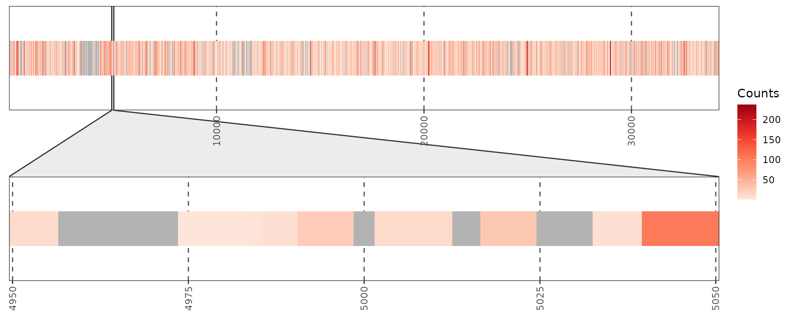

Peptide Mapping Example 1
peptide_mapping_example_1.RmdPurpose
A quick example of visualizing peptide spectral counts on protein sequence. This example is based on a very big protein Titin (3.8 MDa).
Reading data
x <- system.file("extdata/titin_peptide_mapping", "titin_peptides.txt.gz",
package = "MSnSet.utils") %>%
read.table(sep = "\t", header = T)
head(x)## pepSeq
## 1 VMAVNKYGVGEPLESEPVLAVDPYGPPDPPK
## 2 VMAVNKYGVGEPLESEPVLAVDPYGPPDPPK
## 3 IHNLSESDCGEYVCEVSGEGGTSK
## 4 YSVTATNNAGTATENLSVIVLEK
## 5 YSVTATNNAGTATENLSVIVLEK
## 6 YSVTATNNAGTATENLSVIVLEK
fst <- system.file("extdata/titin_peptide_mapping", "titin.fasta.gz",
package = "MSnSet.utils") %>%
readAAStringSet(format="fasta", nrec=-1L, skip=0L, use.names=TRUE)
print(fst)## AAStringSet object of length 1:
## width seq names
## [1] 34232 MTTQAPTFTQPLQSVVVLEGSAA...YTLSLGNEFGSDSATVNINIRSM XP_017447817.1Prepare for plotting
lbls <- pretty_breaks(10)(1:width(fst)) %>%
keep(~ `<`(., width(fst))) %>%
keep(~ `>`(., 0))
p <- ggplot(data = x) +
annotate("rect", xmin = 0.5, xmax = width(fst) + 0.5,
ymin = -0.5, ymax = 0.5, fill = "grey70") +
geom_rect(aes(xmin = Start - 0.5,
xmax = End + 0.5,
ymin = -0.5,
ymax = 0.5,
fill = Counts)) +
scale_y_continuous(expand = c(0,1)) +
scale_x_continuous(expand = c(0,0)) +
scale_fill_distiller(palette = "Reds", direction = 1) +
facet_zoom(xlim = c(4950 - 0.5, 5050 + 0.5), zoom.size = 1, split = F)Plot 1
p1 <- p +
annotate("text", x = lbls, y = -0.55, label = lbls, angle=90,
hjust = 1, vjust = 0.5) +
theme_void() +
theme(panel.border = element_rect(fill = NA, color = "grey20"),
strip.background = element_rect(fill = "grey85", color = "grey20",
linewidth = 0.2),
plot.margin = margin(10, 10, 10, 10))
plot(p1)
Plot 2
p2 <- p +
theme_bw() +
theme(axis.text.x = element_text(angle = 90, vjust = 0.5, hjust = 1),
axis.text.y = element_blank(),
axis.ticks.y = element_blank(),
panel.grid.major.x = element_line(color = "grey30",
linetype = "dashed"),
panel.grid.major.y = element_blank(),
panel.grid.minor = element_blank())
plot(p2)
Plot 3. With overlaid sequence.
seq_ann <- fst %>%
as.character() %>%
strsplit(split = "") %>%
as.data.frame() %>%
setNames("AA") %>%
mutate(Pos = row_number())
p3 <- p2 +
geom_text(data = seq_ann, aes(label = AA, x = Pos, y = 0), size = 3) +
xlab("") +
ylab("")
# Only show sequence in zoom panel
pb <- ggplot_build(p3)
# Select the number of the geom_text layer.
# If PANEL is 1, remove the label.
pb$data[[3]][pb$data[[3]][, "PANEL"] == 1, "label"] <- " "
pg <- ggplot_gtable(pb)
plot(pg)